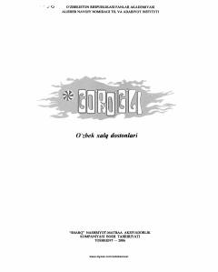

ADGo'ro'g'li turkumiga kiruvchi Avazxon bahodirligi haqidagi xalq dostoni.
Ushbu kitobda 'Go'ro'g'li' turkumiga kiruvchi 'Avazxon' xalq dostoni taqdim etilgan. Asarda Chambil yurti hukmdori Go'ro'g'li hamda uning asrandi o'g'li Avazxonning ko'rsatgan jasoratlari va sarguzashtlari kuylanadi. Doston el-yurtga sadoqat, mardlik va do'stlik kabi oliyjanob fazilatlarni ulug'laydi.